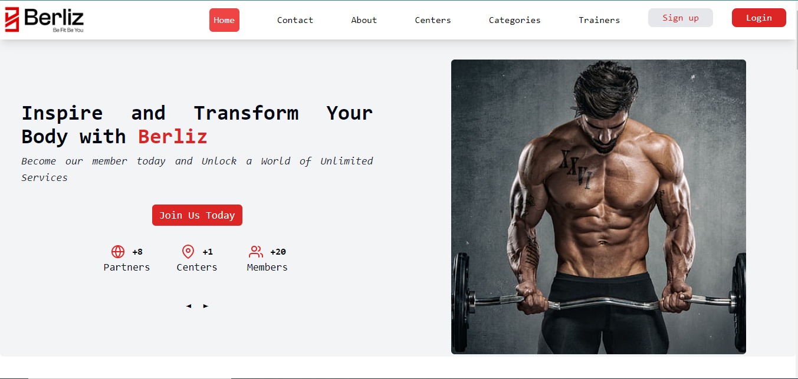

<div class="px-4 md:px-16 font-mono text-gray-900 bg-gradient-to-b from-dark-gray via-light-gray to-dark-gray">
    <div class="py-32 flex-col items-center justify-center p-4">
        <p class="text-2xl md:text-4xl font-sans text-center mb-4 text-gray-900 font-bold">
            Berliz
        </p>
        <p class="mt-4 w-12 mx-auto border-2 p-1 bg-lemon-blue rounded-lg border-lemon-blue"></p>
        <div class="flex items-center justify-center mt-4 font-mono">
            <div class="grid grid-cols md:grid-cols-2 items-center">
                <div class="p-4">
                    
                </div>
                <div class="text-sm md:text-md p-2 text-justify">
                    <div class="text-gray-700 text-center p-4 md:p-8 text-2xl md:4xl font-bold">
                        Revolutionizing Fitness: The Berliz Platform
                    </div>
                    <p class="p-2 mt-4">
                        Berliz is the embodiment of my commitment to web development, offering a dynamic platform
                        tailored to assist users in reaching their fitness goals. Designed to unite trainers, clients,
                        and gym centers, Berliz fosters a collaborative fitness community with innovative features.
                        Utilizing Angular and Spring Boot, Berliz delivers a sophisticated user interface and seamless
                        functionality, reflecting meticulous attention to detail for an exceptional user experience.
                        Representing the convergence of my front-end and back-end expertise, Berliz evolves continuously
                        with ongoing enhancements, solidifying its position as a transformative presence in the fitness
                        industry.
                    </p>
                    <div class="p-2 grid grid-cols-2 md:grid-cols-4 gap-4">
                        <div *ngFor="let skill of skills"
                            class="text-center p-1 px-2 w-30 border-2 bg-bold-gray border-bold-gray text-gray-500 font-bold font-sans rounded-md cursor-pointer">
                            {{ skill.skill }}
                        </div>
                    </div>
                    <div class="flex justify-center p-2">
                        <button
                            class="p-2 py-2 border-2 border-lemon-green bg-lemon-blue text-white font-sans rounded-md cursor-pointer">
                            <a [routerLink]="['/berliz']">
                                View Live
                            </a>
                        </button>
                    </div>
                </div>
            </div>
        </div>